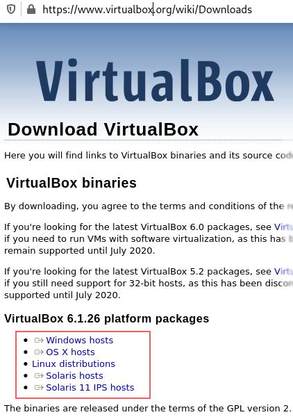
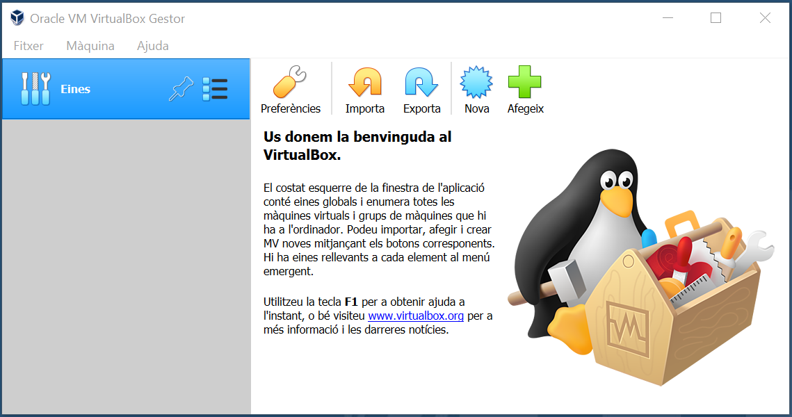
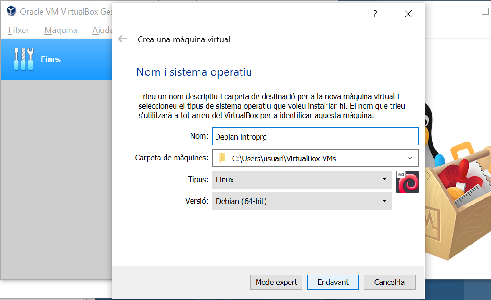
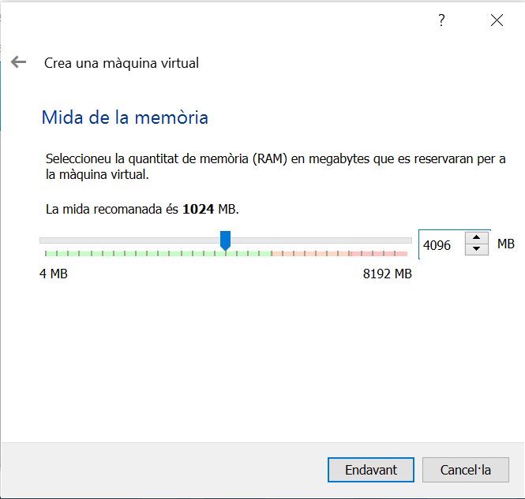
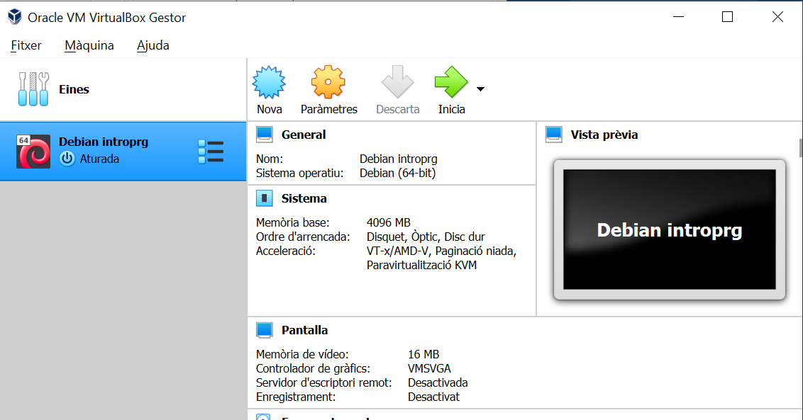
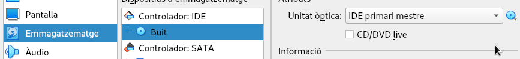

Opció +/- fàcil: màquina virtual
Si això de fer servir una màquina virtual t'ha semblat una bona idea però t'agradaria més saber com crear-la en comptes de fer servir l'opció fàcil <equip_maquina_virtual_ova>, aquesta secció pot ser per tu.
Aquí trobaràs instruccions detallades per construir i configurar una màquina virtual similar a la versió empaquetada de la secció anterior. Per descomptat, pots experimentar amb altres opcions. Sempre pots tornar a la versió fàcil si no te'n surts!
Instaŀlació de VirtualBox
En primer lloc, ens cal un programa que gestioni la màquina virtual que farem servir. Tot i que tenim diferents opcions, aquí ens decantarem per una de gratuïta i més que acceptable: VirtualBox.
Si ja el tens instaŀlat o decideixes fer servir una de les alternatives, pots saltar-te aquesta secció.
Per instaŀlar VirtualBox al teu sistema operatiu, pots seguir aquestes passes:
1. Descarregar
Descarrega l'instaŀlador de VirtualBox
Et recomano que ho facis des de la pàgina oficial: https://www.virtualbox.org/wiki/Downloads
A la pàgina hi trobaràs enllaços específics pel teu sistema operatiu
Segueix l'enllaç corresponent. Per exemple, si vols instaŀlar-lo a un MSWidows, selecciona l'enllaç Windows host.
Això et descarregarà un fitxer al teu equip.
2. Instaŀla
Executa el fitxer que t'has descarregat en el pas anterior.
En la majoria dels casos, accepta els valors per defecte a menys que tinguis alguna raó per no fer-ho. Únicament, si t'ofereix la possibilitat d'instaŀlar controladors (en anglès drivers) addicionals, probablement és una bona idea fer-ho per incrementar la usabilitat de l'aplicació.
3. Executa
Arrenca el programa que acabes d'instaŀlar
En MSWindows et trobaràs una pantalla similar a aquesta:
Instaŀlació de Debian
Ara que ja tenim disponible VirtualBox, és el moment de crear la màquina virtual.
En primer lloc, caldrà disposar de la imatge del sistema operatiu a instaŀlar.
Si no tens alguna preferència, et proposo que instaŀlis un Debian, doncs és una distribució que es distingeix, entre d'altres coses, per la seva estabilitat. A banda, tots els exemples d'execució que et mostraré estan realitzats sobre un Debian.
Si estàs a la meva classe, probablement alguna companya o company ja disposa de la imatge descarregada, altrament, la pots descarregar del seu lloc oficial www,debian.org
Això et descarregarà un fitxer amb un nom similar a
debian-11.4.0-amd64-netinst.iso, potser amb alguna versió posteriori a la
11.4.0 depenent de quan estiguis llegint aquests continguts.
Prem el botó de nova o selecciona l'opció dins de Fitxer i afegeix-li un nom. Si li comences per Debian el programa et posarà uns valors adequats.
Indica-li quanta memòria li vols deixar. En el cas de l'equip que he fet servir per muntar aquest tutorial, diposava de 8 GB i, per tant, com a mínim li posaré 4GB per la màquina virtual.
Com més li posis, millor treballaràs amb la màquina virtual i no tan bé amb els programes de la màquina amfitrió si els vols fer servir simultàniament.
A continuació selecciona l'opció de crear un disc dur virtual ara, escull el tipus de fitxer de disc dur que et proposi per defecte, ubicat de forma dinàmica, amb 20GB d'espai de disc. Si t'ho pots permetre, considera posar-li més. Pensa que es tracta d'un màxim i només s'ocuparà si finalment ho necessites.
Important
El sistema funcionaria amb un disc més petit, però probablement a meitat de curs et trobaries que t'has quedat sense espai i et tocaria fer ampliacions.
Un cop ja el tinguis, et trobaràs una pantalla similar a aquesta:
Cal "inserir" el CD amb la imatge ISO que has descarregat. Ho farem seleccionant Paràmetres → Emmagatzematge → Controlador: IDE → Buit → Atributs → Unitat òptica
Ara clica sobre la icona blava de CD i selecciona el .iso que t'has descarregat.
Accepta i prem la fletxa verda d'iniciar. T'apareixerà una nova finestra amb l'instaŀlador del Debian i ja podem començar a fer la instaŀlació estàndard.
A continuació segueix, en aquest ordre: